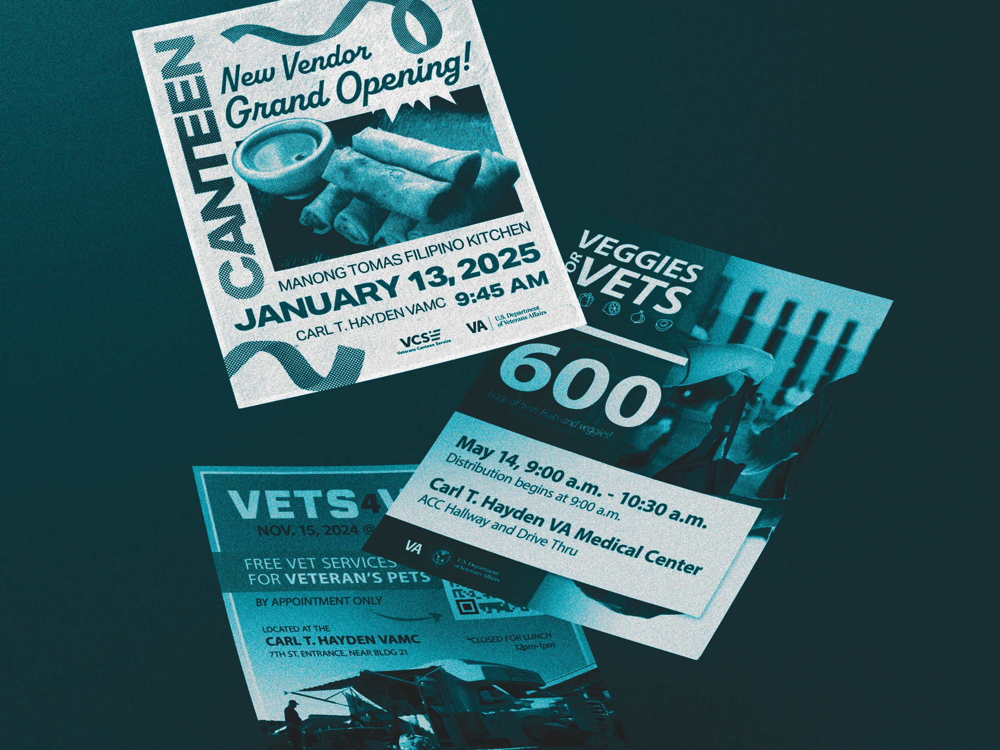
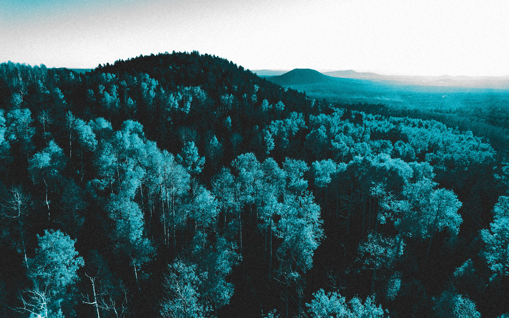

About Me

About Me
A creative professional with more than 10 years of experience, Devin Langer has proven to be an effective creative problem solver and a valuable asset for every team he works with.
Graphic Design

Graphic Design
Explore the versatility of Devin's skills and what he offers across branding, marketing and layout design.
Photography

Photography
View creative storytelling through Devin's lens.
Contact

Contact
Get in touch with Devin for inquiries and collaborations.